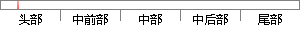

BLAUM M，BRADY J，et al. EVENODD:an efficient scheme for tolerating double sisk failures in RAID archeitectures [J].IEEE Trans. Comput ,1995,44(2):192-202]
片段位置图

相似结果
相似片段：
Systems and Networks. Washington DC:IEEE Computer Society, 2006:217-226. [3]XU Lihao, BRUCK J. Xcode: MDS array codes with optimal encoding [J].IEEE Trans on Information Theory,1999,45(1):272-276. [4]BLAUM M, BRADY J, BRUCK J,et al. EVENODD: an efficient scheme for tolerating double disk failures in RAID architectures [J].IEEE Trans on Computers, 1995,44(2):192-202. [5]PERUMAL S, KRITZINGER P. Objectoriented design of the groupware layer for the ecosystem information system [D]. Montana:University of Montana, 1995. [6]ZAITSEV G V, ZINOVEV V A, SEMAKOV N V. Min
| 对比库： | WriteCheck云资源库 |
| 来源： | www.biye126.cn 查看来源 |
| 发布时间： | 2012-09-15 |
| 相似率 | 54.17% （轻度抄袭） |